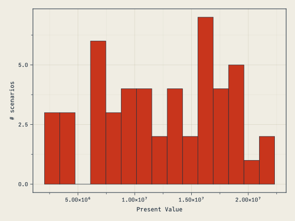

using CSV, DataFrames
using MortalityTables, ActuaryUtilities
using Dates
using OhMyThreads
using BenchmarkTools
using CairoMakie
using Random
# Apply the site's custom Makie plot theme (cassette futurism).
include(joinpath(@__DIR__, "..", "..", "assets", "themes", "cassette_futurism.jl"))
set_theme!(cassette_futurism_theme())Define a datatype. Not strictly necessary, but will make extending the program with more functions easier.
Type annotations are optional, but providing them is able to coerce the values to be all plain bits (i.e. simple, non-referenced values like arrays are) when the type is constructed. This lets the policies be stored inline and contiguously in the array (no pointer chasing) and is an example of data-oriented design. It’s much slower without the type annotations (~0.5 million policies per second, roughly 90x slower than the ~45 million per second benchmarked below).
@enum Sex Female = 1 Male = 2
@enum Risk Standard = 1 Preferred = 2
struct Policy
id::Int
sex::Sex
benefit_base::Float64
COLA::Float64
mode::Int
issue_date::Date
issue_age::Int
risk::Risk
endLoad the data:
sample_csv_data =
IOBuffer(
raw"id,sex,benefit_base,COLA,mode,issue_date,issue_age,risk
1,M,100000.0,0.03,12,1999-12-05,30,Std
2,F,200000.0,0.03,12,1999-12-05,30,Pref"
)
policies = let
# read CSV directly into a dataframe
# df = CSV.read("sample_inforce.csv",DataFrame) # use local string for notebook
df = CSV.read(sample_csv_data, DataFrame)
# map over each row and construct an array of Policy objects
map(eachrow(df)) do row
Policy(
row.id,
row.sex == "M" ? Male : Female,
row.benefit_base,
row.COLA,
row.mode,
row.issue_date,
row.issue_age,
row.risk == "Std" ? Standard : Preferred,
)
end
end2-element Vector{Policy}:
Policy(1, Male, 100000.0, 0.03, 12, Date("1999-12-05"), 30, Standard)
Policy(2, Female, 200000.0, 0.03, 12, Date("1999-12-05"), 30, Preferred)Define what mortality gets used:
mort = Dict(
Male => MortalityTables.table(988).ultimate,
Female => MortalityTables.table(992).ultimate,
)
function mortality(pol::Policy, params)
return params.mortality[pol.sex]
endmortality (generic function with 1 method)This defines the core logic of the policy projection and will write the results to the given out container (here, a named tuple of arrays).
This is using a threaded approach where it could be operating on any of the computer’s available threads, thus acheiving thread-based parallelism (as opposed to multi-processor (multi-machine) or GPU-based computation which requires formulating the problem a bit differently (array/matrix based). For the scale of computation here, I think I’d apply this model of parallelism.
function pol_project!(benefits, lives, policy, params)
# some starting values for the given policy
dur = policy_duration(policy.issue_date, params.val_date)
start_age = policy.issue_age + dur - 1
COLA_factor = 1 + policy.COLA
cur_benefit = policy.benefit_base * COLA_factor^(dur - 1)
# get the right mortality vector
qs = mortality(policy, params)
ω = lastindex(qs)
# inbounds turns off bounds-checking, which makes hot loops faster — write
# the loop without it first to ensure you don't have an out-of-bounds bug.
@inbounds for t in 1:min(params.proj_length, ω - start_age + 1)
q = qs[start_age + t - 1] # mortality for the current projection year
rand() < q && return # death — stop incrementing this life
# otherwise: pay benefit, add a life, grow the benefit by COLA for next year
benefits[t] += cur_benefit
lives[t] += 1
cur_benefit *= COLA_factor
end
endpol_project! (generic function with 1 method)Parameters for our projection:
params = (
val_date=Date(2021, 12, 31),
proj_length=100,
mortality=mort,
)(val_date = Date("2021-12-31"), proj_length = 100, mortality = Dict{Sex, OffsetArrays.OffsetVector{Float64, Vector{Float64}}}(Female => [0.00745, 0.00745, 0.00745, 0.00745, 0.00745, 0.00745, 0.00745, 0.00745, 0.00745, 0.00745 … 0.376246, 0.386015, 0.393507, 0.398308, 0.4, 0.4, 0.4, 0.4, 0.4, 1.0], Male => [0.022571, 0.022571, 0.022571, 0.022571, 0.022571, 0.022571, 0.022571, 0.022571, 0.022571, 0.022571 … 0.4, 0.4, 0.4, 0.4, 0.4, 0.4, 0.4, 0.4, 0.4, 0.4]))Check the number of threads we’re using:
Threads.nthreads()14# Serial projection — one scenario's worth of work. Each call owns its
# own (proj_length,) buffers, so there is no thread coordination.
function project_serial(policies, params)
benefits = zeros(params.proj_length)
lives = zeros(Int, params.proj_length)
for pol in policies
pol_project!(benefits, lives, pol, params)
end
(; benefits, lives)
end
# Threaded projection — used for the throughput demo. Policies are
# chunked, each task accumulates into its own local buffers, and the
# partial results are summed at the end. No `threadid()` and no shared
# writes, so it is correct under task migration.
function project(policies, params)
chunks = OhMyThreads.chunks(policies; n = Threads.nthreads())
parts = OhMyThreads.tmap(chunks) do chunk
b = zeros(params.proj_length)
l = zeros(Int, params.proj_length)
for pol in chunk
pol_project!(b, l, pol, params)
end
(b, l)
end
benefits = sum(p -> p[1], parts)
lives = sum(p -> p[2], parts)
(; benefits, lives)
endproject (generic function with 1 method)Example of single projection:
project(repeat(policies, 100_000), params)(benefits = [5.635566702005779e10, 5.6869882111353195e10, 5.72971478023252e10, 5.7689653917967224e10, 5.798750429733895e10, 5.825352629998379e10, 5.844625644056055e10, 5.86221591840469e10, 5.867324481107587e10, 5.867188554409795e10 … 0.0, 0.0, 0.0, 0.0, 0.0, 0.0, 0.0, 0.0, 0.0, 0.0], lives = [195444, 190927, 186164, 181409, 176492, 171600, 166612, 161693, 156580, 151505 … 0, 0, 0, 0, 0, 0, 0, 0, 0, 0])Benchmarking
The original benchmark on a MacBook Air M3 laptop projected about 45 million policies per second. This memory-intensive benchmark is not rerun when rendering the page, so that number describes the original environment rather than the current package releases:
# Skipped at render time — allocating 45M policies + running @benchmark
# OOMs the Quarto worker. The number is preserved for documentation; the
# block runs interactively when you open the post locally.
policies_to_benchmark = 45_000_000
# adjust the `repeat` depending on how many policies are already in the array
# to match the target number for the benchmark
n = policies_to_benchmark ÷ length(policies)
@benchmark project(p, r) setup = (p = repeat($policies, $n); r = $params)Stochastic Ensemble
Loop through and calculate the reults n times (this is only running the two policies in the sample data” n times).
# One level of parallelism — across scenarios — with the serial kernel
# inside. Avoids nested threadpool contention.
stochastic_proj(policies, params, n) =
OhMyThreads.tmap(_ -> project_serial(policies, params), 1:n)
stoch = stochastic_proj(policies, params, 50)50-element Vector{@NamedTuple{benefits::Vector{Float64}, lives::Vector{Int64}}}:
(benefits = [383220.68177215644, 394717.3022253211, 406558.82129208074, 418755.5859308432, 431318.2535087685, 444257.8011140316, 457585.53514745255, 471313.1012018761, 485452.49423793243, 500016.0690650704 … 0.0, 0.0, 0.0, 0.0, 0.0, 0.0, 0.0, 0.0, 0.0, 0.0], lives = [1, 1, 1, 1, 1, 1, 1, 1, 1, 1 … 0, 0, 0, 0, 0, 0, 0, 0, 0, 0])
(benefits = [574831.0226582347, 592075.9533379817, 609838.2319381211, 628133.3788962648, 646977.3802631528, 666386.7016710474, 686378.3027211789, 706969.6518028142, 728178.7413568987, 750024.1035976056 … 0.0, 0.0, 0.0, 0.0, 0.0, 0.0, 0.0, 0.0, 0.0, 0.0], lives = [2, 2, 2, 2, 2, 2, 2, 2, 2, 2 … 0, 0, 0, 0, 0, 0, 0, 0, 0, 0])
(benefits = [574831.0226582347, 592075.9533379817, 609838.2319381211, 628133.3788962648, 646977.3802631528, 666386.7016710474, 686378.3027211789, 706969.6518028142, 728178.7413568987, 750024.1035976056 … 0.0, 0.0, 0.0, 0.0, 0.0, 0.0, 0.0, 0.0, 0.0, 0.0], lives = [2, 2, 2, 2, 2, 2, 2, 2, 2, 2 … 0, 0, 0, 0, 0, 0, 0, 0, 0, 0])
(benefits = [574831.0226582347, 592075.9533379817, 609838.2319381211, 628133.3788962648, 646977.3802631528, 666386.7016710474, 686378.3027211789, 706969.6518028142, 728178.7413568987, 750024.1035976056 … 0.0, 0.0, 0.0, 0.0, 0.0, 0.0, 0.0, 0.0, 0.0, 0.0], lives = [2, 2, 2, 2, 2, 2, 2, 2, 2, 2 … 0, 0, 0, 0, 0, 0, 0, 0, 0, 0])
(benefits = [574831.0226582347, 592075.9533379817, 609838.2319381211, 418755.5859308432, 431318.2535087685, 444257.8011140316, 457585.53514745255, 471313.1012018761, 485452.49423793243, 500016.0690650704 … 0.0, 0.0, 0.0, 0.0, 0.0, 0.0, 0.0, 0.0, 0.0, 0.0], lives = [2, 2, 2, 1, 1, 1, 1, 1, 1, 1 … 0, 0, 0, 0, 0, 0, 0, 0, 0, 0])
(benefits = [574831.0226582347, 592075.9533379817, 609838.2319381211, 628133.3788962648, 646977.3802631528, 666386.7016710474, 686378.3027211789, 706969.6518028142, 728178.7413568987, 750024.1035976056 … 0.0, 0.0, 0.0, 0.0, 0.0, 0.0, 0.0, 0.0, 0.0, 0.0], lives = [2, 2, 2, 2, 2, 2, 2, 2, 2, 2 … 0, 0, 0, 0, 0, 0, 0, 0, 0, 0])
(benefits = [574831.0226582347, 592075.9533379817, 609838.2319381211, 628133.3788962648, 646977.3802631528, 666386.7016710474, 686378.3027211789, 706969.6518028142, 728178.7413568987, 750024.1035976056 … 0.0, 0.0, 0.0, 0.0, 0.0, 0.0, 0.0, 0.0, 0.0, 0.0], lives = [2, 2, 2, 2, 2, 2, 2, 2, 2, 2 … 0, 0, 0, 0, 0, 0, 0, 0, 0, 0])
(benefits = [574831.0226582347, 592075.9533379817, 609838.2319381211, 628133.3788962648, 646977.3802631528, 666386.7016710474, 686378.3027211789, 706969.6518028142, 728178.7413568987, 750024.1035976056 … 0.0, 0.0, 0.0, 0.0, 0.0, 0.0, 0.0, 0.0, 0.0, 0.0], lives = [2, 2, 2, 2, 2, 2, 2, 2, 2, 2 … 0, 0, 0, 0, 0, 0, 0, 0, 0, 0])
(benefits = [574831.0226582347, 592075.9533379817, 609838.2319381211, 628133.3788962648, 215659.12675438426, 222128.9005570158, 228792.76757372628, 235656.55060093806, 242726.24711896622, 250008.0345325352 … 0.0, 0.0, 0.0, 0.0, 0.0, 0.0, 0.0, 0.0, 0.0, 0.0], lives = [2, 2, 2, 2, 1, 1, 1, 1, 1, 1 … 0, 0, 0, 0, 0, 0, 0, 0, 0, 0])
(benefits = [574831.0226582347, 592075.9533379817, 609838.2319381211, 628133.3788962648, 646977.3802631528, 666386.7016710474, 686378.3027211789, 706969.6518028142, 728178.7413568987, 750024.1035976056 … 0.0, 0.0, 0.0, 0.0, 0.0, 0.0, 0.0, 0.0, 0.0, 0.0], lives = [2, 2, 2, 2, 2, 2, 2, 2, 2, 2 … 0, 0, 0, 0, 0, 0, 0, 0, 0, 0])
⋮
(benefits = [574831.0226582347, 592075.9533379817, 609838.2319381211, 628133.3788962648, 431318.2535087685, 444257.8011140316, 457585.53514745255, 471313.1012018761, 485452.49423793243, 500016.0690650704 … 0.0, 0.0, 0.0, 0.0, 0.0, 0.0, 0.0, 0.0, 0.0, 0.0], lives = [2, 2, 2, 2, 1, 1, 1, 1, 1, 1 … 0, 0, 0, 0, 0, 0, 0, 0, 0, 0])
(benefits = [574831.0226582347, 592075.9533379817, 609838.2319381211, 628133.3788962648, 646977.3802631528, 444257.8011140316, 457585.53514745255, 471313.1012018761, 485452.49423793243, 500016.0690650704 … 0.0, 0.0, 0.0, 0.0, 0.0, 0.0, 0.0, 0.0, 0.0, 0.0], lives = [2, 2, 2, 2, 2, 1, 1, 1, 1, 1 … 0, 0, 0, 0, 0, 0, 0, 0, 0, 0])
(benefits = [574831.0226582347, 592075.9533379817, 609838.2319381211, 628133.3788962648, 646977.3802631528, 666386.7016710474, 686378.3027211789, 706969.6518028142, 728178.7413568987, 750024.1035976056 … 0.0, 0.0, 0.0, 0.0, 0.0, 0.0, 0.0, 0.0, 0.0, 0.0], lives = [2, 2, 2, 2, 2, 2, 2, 2, 2, 2 … 0, 0, 0, 0, 0, 0, 0, 0, 0, 0])
(benefits = [574831.0226582347, 592075.9533379817, 609838.2319381211, 628133.3788962648, 646977.3802631528, 666386.7016710474, 686378.3027211789, 706969.6518028142, 728178.7413568987, 750024.1035976056 … 0.0, 0.0, 0.0, 0.0, 0.0, 0.0, 0.0, 0.0, 0.0, 0.0], lives = [2, 2, 2, 2, 2, 2, 2, 2, 2, 2 … 0, 0, 0, 0, 0, 0, 0, 0, 0, 0])
(benefits = [574831.0226582347, 592075.9533379817, 609838.2319381211, 628133.3788962648, 646977.3802631528, 666386.7016710474, 686378.3027211789, 706969.6518028142, 728178.7413568987, 750024.1035976056 … 0.0, 0.0, 0.0, 0.0, 0.0, 0.0, 0.0, 0.0, 0.0, 0.0], lives = [2, 2, 2, 2, 2, 2, 2, 2, 2, 2 … 0, 0, 0, 0, 0, 0, 0, 0, 0, 0])
(benefits = [574831.0226582347, 592075.9533379817, 609838.2319381211, 628133.3788962648, 646977.3802631528, 666386.7016710474, 686378.3027211789, 706969.6518028142, 728178.7413568987, 750024.1035976056 … 0.0, 0.0, 0.0, 0.0, 0.0, 0.0, 0.0, 0.0, 0.0, 0.0], lives = [2, 2, 2, 2, 2, 2, 2, 2, 2, 2 … 0, 0, 0, 0, 0, 0, 0, 0, 0, 0])
(benefits = [574831.0226582347, 592075.9533379817, 609838.2319381211, 628133.3788962648, 431318.2535087685, 444257.8011140316, 457585.53514745255, 471313.1012018761, 485452.49423793243, 500016.0690650704 … 0.0, 0.0, 0.0, 0.0, 0.0, 0.0, 0.0, 0.0, 0.0, 0.0], lives = [2, 2, 2, 2, 1, 1, 1, 1, 1, 1 … 0, 0, 0, 0, 0, 0, 0, 0, 0, 0])
(benefits = [574831.0226582347, 592075.9533379817, 609838.2319381211, 628133.3788962648, 646977.3802631528, 666386.7016710474, 457585.53514745255, 471313.1012018761, 485452.49423793243, 500016.0690650704 … 0.0, 0.0, 0.0, 0.0, 0.0, 0.0, 0.0, 0.0, 0.0, 0.0], lives = [2, 2, 2, 2, 2, 2, 1, 1, 1, 1 … 0, 0, 0, 0, 0, 0, 0, 0, 0, 0])
(benefits = [574831.0226582347, 592075.9533379817, 609838.2319381211, 628133.3788962648, 646977.3802631528, 666386.7016710474, 686378.3027211789, 706969.6518028142, 728178.7413568987, 750024.1035976056 … 0.0, 0.0, 0.0, 0.0, 0.0, 0.0, 0.0, 0.0, 0.0, 0.0], lives = [2, 2, 2, 2, 2, 2, 2, 2, 2, 2 … 0, 0, 0, 0, 0, 0, 0, 0, 0, 0])v = [pv(0.03, s.benefits) for s in stoch]
hist(v,
bins=15;
axis=(xlabel="Present Value", ylabel="# scenarios")
)
Further Optimization
In no particular order:
- the RNG could be made faster: https://bkamins.github.io/julialang/2020/11/20/rand.html
- Could make the stochastic set distributed, but at the current speed the overhead of distributed computing is probably more time than it would save. Same thing with GPU projections
- …